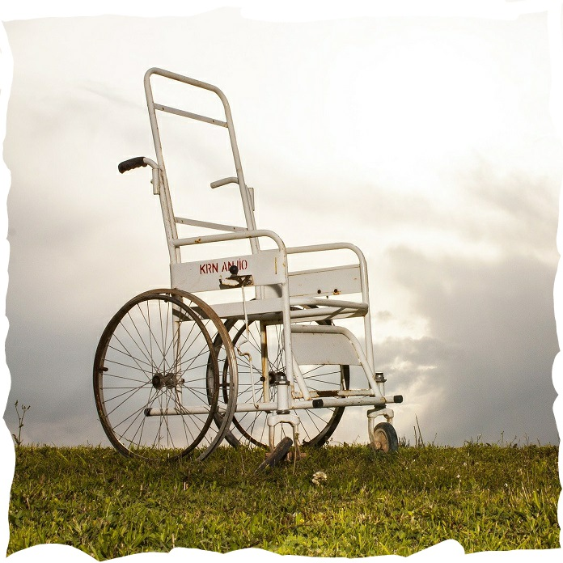
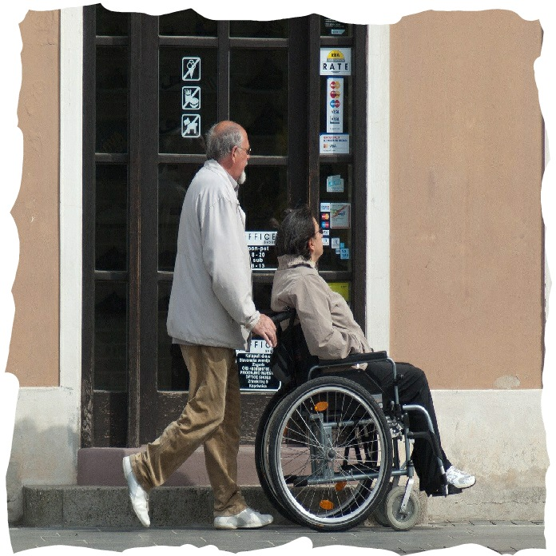

산업경영공학과 20학번 김하진 어떤 주제로 어떤 활동을 해야 하는지 정해지지 않은 상황에서 세계시민으
로서 고찰해야할 부분에 대한 고민을 하게 되면서 많이 성장할 수 있는 기회
였다.코로나 인해 비대면으로 조별활동이 진행되었음에도 조의 분위기와 모두가 뒤처지지
않기 위해 노력하는 모습에서 팀워크를 느낄 수 있었다.
소프트웨어융합공학과 20학번 김희성 이번 GCP 활동을 하면서 가장 와닿았던 말이 있었다. “단순히 시설을 설치
하는 것에 의의를 두는 것이 아니라, 장애인들이 실제로 시설을 이용했을 때의
편리성 여부가 중요하다” 막상 결과물을 만들고 보니, 본질적인 문제가 생각났
다. 오차율이 조금 있었지만 발전해 나가면 된다고 생각했었다. 그래도 유저의 입장을 좀 더 고민
해서 만들어야겠다는 것을 배웠다.


조원 소감
응용수학과 20학번 손예린 사회적 약자들의 생활 속 고통을 깊게 생각해 본 적이 없었던 것 같은데 이
번 기회를 통해 그들의 불편함을 알고 헤아릴 수 있었다. 또한, 사회적인 의미
- 32 -
까지 알아보며 배리어프리는 약자들만을 위한 것이 아니라 사회의 발전을 이
끌어낼 수 있다는 것을 알게 되었다. GCP 목적에 맞게 모두가 평등한 사회를
추구할 수 있는 시민이자 학생으로 한 발 다가간 것 같았고, 알게 된 점들을
주변 사람들과 공유할 수 있어서 더 의미 있었던 것 같다.
러시아어학과 20학번 최민기 저희가 크게 사회를 직접적으로 당장은 바꾸지 못
하겠지만 저희가 제작한 수화번역기, 카드뉴스, 웹사이트가 조금이나마 개개인
분들의 인식을 바꾸는데 도움을 된다면 정말 좋을 것 같습니다. 그리고 마지막
으로 많은 만남을 가지면서 개인적으로 친해진 GCP 조원분들과 협력하며 배
려하며 활동할 수 있어서 너무 의미 있는 한학기가 된 것 같습니다.